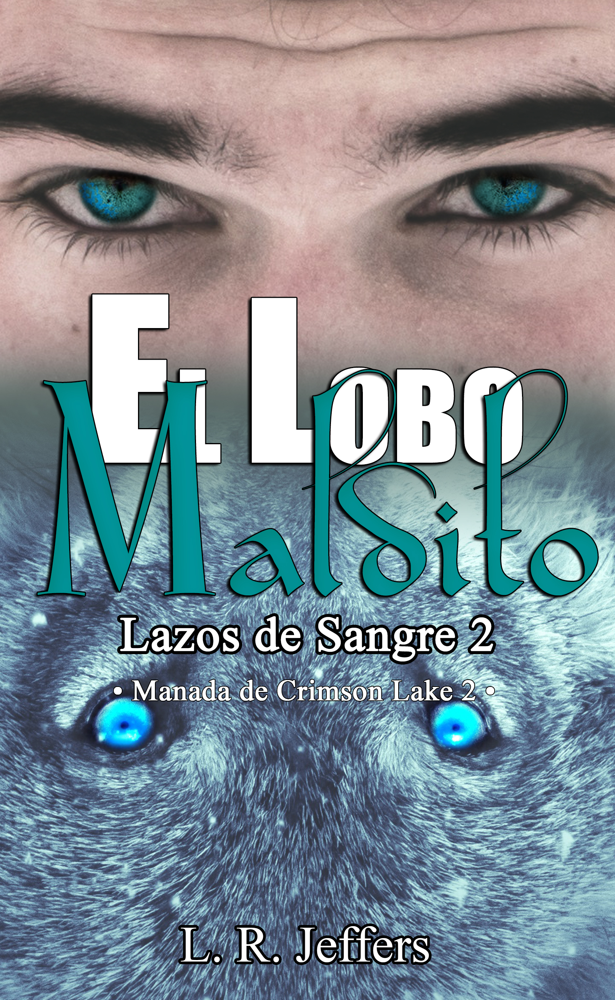

El lobo maldito
«La venganza es un fuego que consume... hasta que el Destino te obliga a soltarlo.»
También disponible en formato digital y papel.
Sinopsis
Gabriel Bane McAllister solo vive para una cosa: el día en que pueda tomar venganza de la familia que lo dejó moribundo en medio del bosque, siendo tan solo un niño, solo por llevar en su pecho la supuesta Marca del Demonio.
Como Beta de la manada BadMoon, la más poderosa del país y la más extraña —dirigida por el último de los Lobos Rojos gigantes y su pareja, un Omega albino con tendencias psicópatas—, Gabriel no tiene un solo día de paz. Como si esto no fuera suficiente, ha estado teniendo extrañas pesadillas con un felino con heterocromía, que parece mirarlo todo en su interior con sus penetrantes ojos desiguales.
Pero Gabriel no tiene tiempo para esto, por lo que pelea duro para mantenerse fuerte y cuerdo dentro de su propia locura. Huyendo de sus demonios, enfrentándolos y uniéndose a ellos solo cuando su mente se quiebra por el dolor.
Preocupado, su Alfa le obliga a tomar vacaciones y es entonces que Gabriel se encuentra siendo cazado no solo por el hombre más caliente que haya conocido, sino por sus insoportables y muy ruidosas hijas. Esto estaría bien si le gustaran los niños; pero sería mucho mejor si él no fuera heterosexual y este hombre sexy no afirmara ser su compañero.
Incluso esto Gabriel lo pasaría por alto, si Idris no fuera un maldito león.
Leer extracto gratuito
Capítulo 1
Su lobo se inquietaba alrededor de las muestras de afecto y le gruñía malhumorado, como si fuera su culpa no haber encontrado a su compañera todavía.
Aclarándose la garganta, los hizo salir de su pequeña burbuja de amor.
—Necesito un lavado de cerebro —se quejó—. ¿Dónde está Hoshi? Necesito que me hipnotice y saque esta mierda de mi mente, en serio.
Arian bufó, haciendo rodar los ojos, y le mostró el dedo corazón. Moviendo la mano de forma obscena, dijo:
—Para tu culo.
Gabriel rio.
—Lo siento, Compañero-Insoportable, no es lo mío. Me van los coños y las tetas enormes, lo sabes.
—Un día alguien meterá uno o dos de estos en tu culo y te va a gustar.
Gabriel volvió a burlarse.
—Cuando el infierno se congele, Snow.
—Tal vez ya empezó a nevar ahí, Bane.
—Ni en tus fantasías más sucias, Snow.
—Yo sé que está en las tuyas, Bane.
—Que te jodan por el culo, Snow.
—De rodillas y te mostraré lo bueno que soy jodiendo culos, Bane.
—Muérete, Snow.
—Tú primero, Bane.
Rhys resopló, frustrado por la pequeña y muy infantil discusión que habían iniciado. Gabriel no se sentía orgulloso de sí mismo ahora, pero en su defensa diría que Arian era insoportable como un tumor y lo sacaba de su piel con mucha facilidad.
—No empiecen. ¿Tengo que estar en coma de nuevo para que se lleven bien?
—Quizás. —Gabriel le dio una sonrisa sucia—. Él y yo no podemos ser amigos, Rhys, no nos soportamos. Además, tú eras mío antes de que él llegara, y lo odio por eso.
—Ja, ja, ja... Gracioso. —Arian se aferró al brazo de Rhys—. Búscate tu propio Alfa, este es mío.
—¿Seguro de eso, Snow?
—Muy seguro, Bane.
—En tu lugar, no lo estaría, Snow.
Rhys gimió.
—Ya, ya, cachorros. —Se apretó el puente de la nariz, luego miró a Gabriel con amabilidad—. Te dejo a cargo. Estaremos de vuelta en una semana, pero si sucede algo, no dudes en llamarme.
Gabriel negó, palmeándole el hombro.
—¿Y dejar de ser el perro de arriba, amo absoluto de la miseria y el dolor, durante siete días? ¿Estás loco? Largo, disfruta de tus vacaciones.
Arian y Rhys se rieron.
—Llama si me necesitas, Bane. Y por favor, no mates a nadie.
—No prometo nada, pero lo intentaré.
—Eso es suficiente. —Rhys lo abrazó por un momento—. Gracias, amigo.
—Sí, de nada. Buen viaje.
Con un asentimiento de cabeza, Rhys comenzó a caminar llevando a su compañero de la mano. Antes de salir, él lo miró y Arian volvió a enseñarle el dedo medio. Gabriel hizo lo mismo, ambos se sonrieron y la pareja desapareció por el pasillo.
Gabriel fue hacia el minibar y tomó la botella de whisky escocés; lo necesitaba. Él no podía emborracharse, pero al menos adormecería sus sentidos sobreexcitados y le ayudaría a olvidarse por un momento de los sueños y el jodido gato con heterocromía que había estado atormentándolo durante dos meses. Retiró la tapa y le dio un largo y profundo trago; tosió, palmeándose el pecho cuando la quemadura atravesó su garganta. Sí, esto se sentía bien.
Fue hacia el escritorio y se dejó caer en la silla, subió los pies a la mesa y continuó bebiendo. La marca en su pecho cosquilleó; había empezado a hacerlo cuando iniciaron las pesadillas. Gabriel no asoció una cosa y otra porque le pareció estúpido; ahora lo hacía. Su maldición y los sueños estaban conectados, pero ¿por qué y de qué forma? Necesitaba respuestas y un maldito sacerdote; a estas alturas tomaría cualquier ayuda que pudieran ofrecerle, aunque desafiara sus no-creencias-religiosas.
No es que fuera ateo; es que, después de haber sido sacrificado a una diosa inexistente, por una maldición inexistente, él no sabía en qué o en quién creer.
Su lobo levantó la mirada, con sus claros ojos turquesa puestos en él, y resopló. «Beber no lo resolverá», susurró dentro de su cabeza. Gabriel no le prestó atención. «Ignorarme tampoco funciona; somos uno solo, tú no puedes huir de mí». Bueno, infierno, ciertamente no podía.
—Cállate —murmuró y le dio otro profundo trago a la botella.
«Deja de beber. Si te duermes, el gato regresará. Él no me gusta».
—¿Qué, asustado del minino?
Su lobo sacudió la cabeza.
«Él está cazándonos. No me gusta. Soy un lobo, yo cazo; no soy una presa». Indiscutiblemente, y le concedería esto. Si se relajaba demasiado, los malditos ojos volverían. Él ya no deseaba verlos.
Haciendo el escocés a un lado, se frotó el puente de la nariz en el instante en que abrieron la puerta. Tan distraído como estaba, no supo quién era hasta que lo vio: Cedric, mejor conocido como Sundown. Ah, demonios, no. Que el Líder Asesino estuviera ahí, mirándolo como si tuviera el Santo Grial o todas las respuestas del universo, solo significaba una cosa: problemas.
Unos enormes problemas, solo para él.
—Beta —dijo Cedric, firme delante de él, evitando su mirada.
Por su tono, Gabriel supo que había más en juego de lo que había imaginado.
—Sundown, ¿qué sucede?
Él apretó los labios un momento antes de hablar:
—Nos llegó un mensaje del Alfa Hayes. Dice que un grupo de felinos fue visto por los alrededores. El Alfa Tsosie también los vio; él está preocupado por la seguridad de Agony, así que pidió apoyo. También dice que debemos estar alertas: son leones.
Genial, simplemente maravilloso. Su clase favorita de gatos.
—Entiendo. Envía a tres de nuestros Asesinos para proteger a Agony. —Se puso de pie—. Yo iré a averiguar quiénes son.
—Ese es el problema: nadie sabe, solo que los han visto rondando nuestros territorios. Parecen buscar algo; ni idea de qué.
Gabriel gimoteó.
—Bueno, mierda, tendremos que estar atentos. Todavía no nos recuperamos por completo del ataque anterior. Como sea, que Rain y sus Centinelas estén alertas. Tú, prepara a los Asesinos.
—Sí, Beta. —Cedric hizo una ligera inclinación de cabeza antes de correr para cumplir con su orden.
«Mierda, como si mi vida no fuera mala en estos momentos», se quejó Gabriel para sí mismo. Gatos, gatos y más gatos. Arian podía haber sido entrenado por uno y amarlos; él los odiaba.
Y ahora tenía que cazar algunos.
💡 Este extracto representa aproximadamente el 10% del libro. Para continuar la historia, disponible en Amazon.
Contenido exclusivo
Estamos reescribiendo El lobo maldito para ofrecerte la mejor experiencia. Cuando la nueva versión esté lista, añadiremos aquí:
- ✨ Ficha detallada de Gabriel "Bane" e Idris
- 🎵 Playlist oficial de la historia
- 🎁 Escena eliminada o POV alternativo
¿Quieres ser el primero en saber cuándo está listo? Únete al Círculo Oscuro.